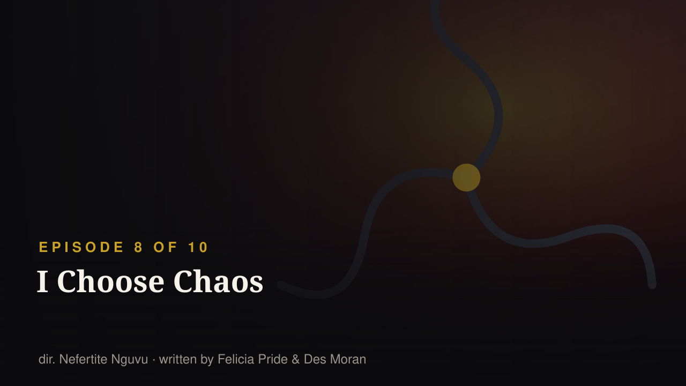
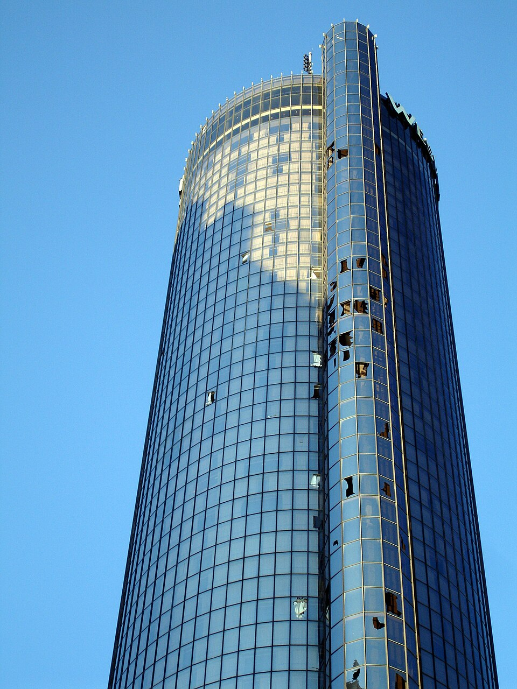
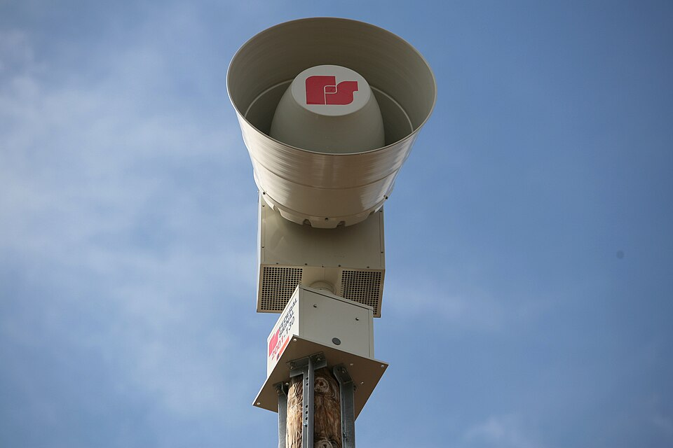

EPISODE 8 OF 10 · RELEASED 2026-09-24
A tornado warning traps the students inside, meaning several people who have been avoiding difficult conversations can no longer get away from each other. Hazel and Amir are forced to confront their ongoing conflict. Deborah and Shaquille finally discuss their original breakup, revealing more about what went wrong between them before Hillman. Their conversation also makes it increasingly difficult for others to keep avoiding each other.
S5·E99 — “In the Eye of the Storm” · first aired 1991-10-17
A hurricane heads for Hillman; Freddie and Ron, busy arguing, are left behind at the radio station — "so they only have each other to comfort".
The weather-as-pressure-cooker is a device the original invented for itself three decades earlier, and the revival's eighth episode is the same machine with a bigger cast: a storm, a locked building, and nothing to do but say the thing you've been avoiding.
Sources: Wikipedia — A Different World (2026 TV series) · Wikipedia — List of A Different World episodes · search terms: tornado storm warning trapped stuck
S2·E26 — “Dream Lover” · first aired 1988-11-03
The original's defining romance spent whole episodes on failure to communicate: a party, a dance, a kiss that gets denied, and a poem-book misunderstanding with Freddie in the middle of it.
Deborah and Shaquille's post-mortem is structurally the same scene the original kept writing for Dwayne and Whitley — the conversation both people could have had years earlier. It's the show teaching its audience how much of a romance is just latency.
Sources: Wikipedia — A Different World (2026 TV series) · Wikipedia — List of A Different World episodes · search terms: Shaquille breakup broke up before Hillman
S1·E8 — “If Chosen I May Not Run” · first aired 1987-12-03
An original first-season episode whose title is about being drafted into something you would not choose.
Weak echo, and we're flagging it as weak: both titles are about the difference between choosing a mess and having one chosen for you. We list it because being wrong about these is fine — being untraceable about them is not.
Sources: Wikipedia — A Different World (2026 TV series) · Wikipedia — List of A Different World episodes · search terms: chaos choose chosen
A weather emergency locks everyone in one building and forces the conversations they have all been avoiding.
The original said it first — S5·E99 “In the Eye of the Storm” (1991-10-17)A hurricane heads for Hillman; Freddie and Ron are left behind at the radio station mid-argument and end up with only each other for company.
What is happening nowNot every episode carries a political thesis, and pretending otherwise is how fan writing becomes propaganda for a show the writers never made. The storm is a dramaturgical device the original established in 1991. Its politics are downstream of whatever the trapped characters finally say to each other.
Collapsed by default, at the bottom. Kept local — never published wholesale.
subtitles/ and running python3 scripts/import_subtitles.py. Accepted: .srt, .vtt, Netflix .ttml/.dfxp, or a .json export from the Netflix Subtitle Translator userscript cache.


Hillman's money runs out; the students organize. In 1989 they took the same fight to the campus radio station.

Deborah Wayne starts her freshman year at her parents' college — 39 years to the day after her parents' show premiered.

Deborah speaks her mind in public and gets called out for it. In 1989 the same fight happened over a campus radio show.

Homecoming brings the alumni back — and the original cast back to campus, with Dwayne and Whitley's marriage visibly cracking.

The title is a one-word edit of a 1987 episode. The dating rules underneath it changed completely.

Finals panic, then a crisis that reframes everything — the slot the original show reserved for the episode that mattered most.

"The aunties" walk into the club — five of them played the same roles forty years ago.